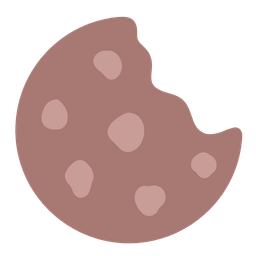

Media Kit · 2026

Laura Barbero
Dietista-nutricionista
- Trastornos de la conducta alimentaria
- Relación con la comida
- Imagen corporal
@tunutrilauratunutrilaura.com
De un vistazo
- Quién
- Laura Barbero Mora. Dietista-nutricionista colegiada, CAT2732 · CoDiNuCat.
- A qué me dedico
- Acompaño a quienes han perdido la paz con la comida, sin poner el peso en el centro y en equipo con psicólogas especializadas.
- Especialización
- Trastornos de la conducta alimentaria, relación con la comida e imagen corporal.
Sobre mí
A los catorce me diagnosticaron un TCA.
Me llamo Laura Barbero y soy dietista-nutricionista especializada en trastornos de la conducta alimentaria, relación con la comida e imagen corporal.
A los catorce me diagnosticaron un TCA. Esa vivencia fue la que me llevó a estudiar Nutrición Humana y Dietética, y la que le dio sentido a mi profesión.
Hoy acompaño a quienes han perdido la paz con la comida, sin poner el peso en el centro y en equipo con psicólogas especializadas.
- +5años en consulta
- +200mujeres acompañadas
- 100%online, toda España
Colegiada CAT2732 · CoDiNuCat
Qué es Tunutrilaura
No es una consulta de nutrición al uso. Es una forma de entender la alimentación que se apoya en cuatro pilares.
Trastornos de la conducta alimentaria
Identificar, acompañar y derivar. Sin dramatizar y sin minimizar.
Relación con la comida
Antes del qué comer está el cómo se vive lo que se come.
Imagen corporal
Cómo miramos nuestro cuerpo determina cómo comemos.
Psiconutrición
Nutrición y psicología de la mano, nunca por separado.
Cómo acompaño
- Enfoque no centrado en el peso
- Escucha sin juicios
- Nutrición y emoción de la mano
- El ritmo de cada persona
Lo que dejo fuera
- Dietas y planes cerrados
- El peso como medida del éxito
- Separar lo alimentario de lo emocional
- Culpa o presión sobre el cuerpo
Temas para conversar
Cualquiera de estos temas se adapta al formato y a la duración del programa.
- 01
TCA
- Qué es realmente un TCA y qué no lo es
- Por qué se puede tener un TCA con un peso normal
- 02
Relación con la comida
- Dónde está la línea entre cuidarse y obsesionarse
- La culpa después de comer: de dónde viene
- 03
Cultura de la dieta
- Por qué fallan las dietas y a quién le conviene
- Cuando comer sano se convierte en obsesión
- 04
Imagen corporal
- Comentarios sobre el cuerpo, también los bienintencionados
- Por qué la báscula no es el único indicador de salud
- 05
Nutrición y redes
- Consejos virales de nutrición y quién responde por ellos
- Cómo leer contenido de nutrición sin agobiarse
Preguntas que me podrías hacer
¿Qué te hubiera gustado que te dijeran a los catorce años?
- ¿En qué momento comer saludable deja de ser saludable?
- ¿Se puede estar enferma con un peso que parece saludable?
- ¿Qué normalizamos socialmente que debería hacernos saltar las alarmas?
- Si las dietas funcionaran, ¿por qué seguimos haciendo dietas?
Son un punto de partida: el guion lo marcáis vosotros.
Mitos que me gustaría desmontar
-
Mito
“Los TCA se ven a simple vista.”
En realidad
Casi nunca se ven.
-
Mito
“Si quisiera, podría dejar de hacerlo.”
En realidad
No es fuerza de voluntad.
-
Mito
“Comer sano siempre es sano.”
En realidad
Depende de a qué precio.
-
Mito
“Perder peso siempre es una buena noticia.”
En realidad
Depende de cómo y por qué.
Mi mirada profesional
Especialización real
Los TCA y la imagen corporal no son una parte de lo que hago: son lo que hago.
Lenguaje claro
Explico lo complejo sin tecnicismos y sin titulares engañosos.
Cuidado con el mensaje
Cómo se cuenta importa tanto como lo que se cuenta.
Formación
- UAMGrado en Nutrición Humana y Dietética
- UEMMáster en Nutrición Clínica
- CAT2732Colegiada · CoDiNuCat
- TCAExperta en conducta alimentaria y psiconutrición
Formación en imagen corporal y alimentación intuitiva.
En qué puedo participar
Cualquier propuesta sobre alimentación, cuerpo y salud mental se valora caso por caso.
Podcast
Como invitada o como voz recurrente.
Entrevistas
Medios escritos y digitales.
Radio y televisión
En directo o grabado.
Charlas y eventos
Ponencias y mesas redondas.
Colaboraciones
Con marcas afines y otros profesionales.
Han dicho
Testimonios reales de pacientes, publicados con su autorización.
Su enfoque no pesocentrista y sin dietas me ha ayudado con la relación con la comida y con mi cuerpo.
Me ha ayudado a mejorar mi alimentación, pero sobre todo mi relación con la comida y conmigo misma.
En ningún momento te sientes ni juzgada ni presionada: todo fluye con mucha naturalidad.
Contacto
¿Un podcast, una entrevista o una colaboración?
Lo vemos con calma.
- Emailinfo@tunutrilaura.com
- Teléfono+34 680 628 353
- Webtunutrilaura.com
- Instagram@tunutrilaura
- LinkedInLaura Barbero Mora
Laura Barbero Mora
Dietista-nutricionista · CAT2732